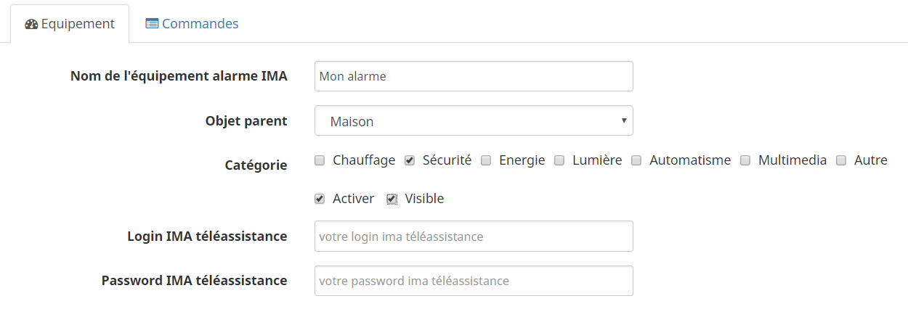

Ce plugin permet d'afficher le statut de votre alarme IMA téléassistance (commercialisée notamment par la MACIF).
Vous devez tout d'abord activer l'option "Pilotage à distance" de votre alarme. Ceci peut se faire gratuitement en appelant IMA téléassistance. Vous obtiendrez alors un login/mot de passe d'accès au site: https://pilotageadistance.imateleassistance.com .
Une fois le plugin installé:

Le login / mot de passe à configurer ici est celui qui vous permet d'accéder à https://pilotageadistance.imateleassistance.com (voir section Prérequis). Ces identifiants sont stockés uniquement dans votre jeedom et servent à récupérer le statut de l'alarme.
Pensez à - choisir un objet parent, - cliquer sur activer, - cliquer sur visible. Sans ces 3 conditions, vous ne verrez pas votre alarme sur le dashboard jeedom.
Cliquez maintenant sur Accueil > Dashboard : un nouveau widget apparaît, qui représente le statut actuel de l'alarme.
3 statuts sont possibles: - ON (l'alarme est en marche), - OFF (l'alarme est éteinte), - PARTIAL (l'alarme est active sur une partie de votre domicile uniquement). - UNKNOWN (une erreur technique sur le site pilotageadistance.imateleassistance.com a empêché de récupérer le status de l'alarme)
Ils sont simplement stockés sur votre Jeedom pour pouvoir récupérer le statut de l'alarme.
Le statut de l'alarme est mis à jour toutes les minutes par jeedom. Il faut donc attendre jusqu'à une minute pour voir le statut changer.
Par défaut, le statut de votre alarme est historisé. Vous pouvez consulter l'historique en cliquant sur "Statut alarme" sur le widget de votre alarme sur le dashboard jeedom: * la valeur 0 signifie que l'alarme était éteinte, * la valeur 2 signifie qu'elle était allumée, * la valeur 1 que l'alarme couvrait une partie de votre domicile. * la valeur -1 signifie qu'il y a eu une erreur technique sur le site pilotageadistance.imateleassistance.com au moment de la récupération du statut.
Depuis l'écran de configuration de votre alarme, cliquez sur Commandes, et décochez la case "Historiser".